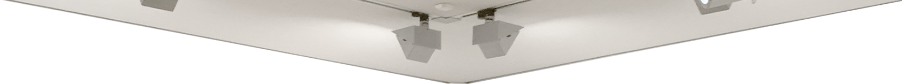

My Collectible Ass
McKenzie Wark
October 2017
To think about digital objects as collectable, it may help to start by asking what it is that is actually collected. We tend to think that what is collected is a rare object. But what makes it rare? Perhaps there is more than one way to make an object rare. To make a digital object rare, it can be “locked” in various ways. Paradoxically, an object whose image is very widely spread is a rare object, in the sense that few objects have their images spread widely. This can be exploited to create value in art objects that are not in the traditional sense rare and singular. The future of collecting may be less in owning the thing that nobody else has, and more in owning the thing that everybody else has.
The artwork is not what it used to be. Perhaps one could think of three stages in the evolution of the artwork, each of which has its own kind of rarity and collectability. The first stage we now think of as that of the old masters. The second stage is that of modern art. The third stage begins with what we call contemporary art, but is perhaps only now starting to reveal its true form.
The first stage corresponds to the era of landed property and mercantile capitalism. This is the era in which the artwork separates itself from the crafted commodity and becomes fine art. The artwork is an even rarer instance of something already rare, the well-made thing. Artworks are collectively made, in workshops, just like handcrafted objects. The workshop has a master whose name starts to appear on the object, even if the master did not make all of it.
The second stage corresponds to the era of industrial capitalism. Here the rare and collectible thing is no longer an exemplary instance of the crafted commodity. The artist is no longer the master craftsman. He (still usually “he” in this period) is a free spirit, a singular and original personage. The rarity and collectability of the artwork is not guaranteed by his being a master craftsman but by his being an original personality. The modern work of art, the artwork of this period, may have the qualities of a master craftsman, but need not.
The third stage is something else. It corresponds to the period in which information becomes the key to value in both the wider economy and also in art. The artwork is no longer a special kind of commodity as it was in the modern-art period. The artwork is now a special kind of financial instrument. The artwork is now a special kind of derivative. The collectable artwork now stores value because it is a financial instrument in a portfolio that manages and hedges risk.
The key is the role of information about the artwork. The information about the artwork is actually the most important thing about it. What establishes the value of the work is that people talk about it, write about it, circulate (unauthorized) pictures of it. The more it circulates, the more value it has. The actual work is a derivative of the value of its simulations.
Tino Sehgal's This Situation (2007) & This Progress (2010). Here is what is relevant about these works for our purposes. All of Sehgal’s works use actual humans to be the work. The Kiss (2007) uses dancers. This Progress used a lot of academics, as we can talk a lot. The works are always a series of protocols for how the interpreters are to interact with each other and with the public.
The artist does not want any of this documented—at all. There are no officially sanctioned photographs of any of these works. There are no written documents with the protocols the artist created. If you wish to buy a Sehgal work, you will be instructed orally in how to perform it, and verbal contract will be conducted, in the presence of a small army of lawyers and witnesses.
A Sehgal had almost gone on the secondary market. Imagine that. An artwork that has no material existence at all outside various parties’ memories, being sold again to another collector—but where what is really in the collection is not the work at all. What is collectible is not the artwork, or even the documentation. What is collectible is the simulation of the work in the artworld and beyond.
I tried to persuade art critics Roberta Smith and Jerry Saltz that all of Tino’s interpreters had the Sehgal signature tattooed on our asses and offered to show it to them, but they did not take me up on it. I mention this because it is not just the information about the artwork circulating in the world that makes it collectible. It is also the noise. As with any other financial instrument in a portfolio, the artwork in a collection gains and loses value at the volatile edge between information and noise.
So my attempt to make my own ass collectible by falsely claiming that it was a signed Seghal did not succeed. But maybe it raises the question of what the collector collects when she or he collects. It need not be the object, as it was in the age of the old masters. It need not even be the documentation of the provenance of the work, as it was at the end of the modern-art age. What is collected might be nothing more than the claim to ownership itself. And even a verbal contract might suffice to sustain the claim, as in the case of Sehgal.
But a Sehgal is not worth anything if nobody knows about it. The ownership claim is a derivative of the information circulating about the work. What is collected is nothing more than the act of collecting itself, which is a derivative of the information circulating about the work.
Art today has moved on from being orderings of interesting information, to being interesting ways of ordering information. So perhaps the avant-garde of collecting is now a question of interesting ways of collecting the act of collecting itself. Which should make digital art eminently collectible, to the extent that it is interesting. But it might in the end be uninteresting for the digital art object merely to mimic the forms of collectability of previous classes of art object.
The artwork is not what it used to be. Perhaps one could think of three stages in the evolution of the artwork, each of which has its own kind of rarity and collectability. The first stage we now think of as that of the old masters. The second stage is that of modern art. The third stage begins with what we call contemporary art, but is perhaps only now starting to reveal its true form.
The first stage corresponds to the era of landed property and mercantile capitalism. This is the era in which the artwork separates itself from the crafted commodity and becomes fine art. The artwork is an even rarer instance of something already rare, the well-made thing. Artworks are collectively made, in workshops, just like handcrafted objects. The workshop has a master whose name starts to appear on the object, even if the master did not make all of it.
The second stage corresponds to the era of industrial capitalism. Here the rare and collectible thing is no longer an exemplary instance of the crafted commodity. The artist is no longer the master craftsman. He (still usually “he” in this period) is a free spirit, a singular and original personage. The rarity and collectability of the artwork is not guaranteed by his being a master craftsman but by his being an original personality. The modern work of art, the artwork of this period, may have the qualities of a master craftsman, but need not.
The third stage is something else. It corresponds to the period in which information becomes the key to value in both the wider economy and also in art. The artwork is no longer a special kind of commodity as it was in the modern-art period. The artwork is now a special kind of financial instrument. The artwork is now a special kind of derivative. The collectable artwork now stores value because it is a financial instrument in a portfolio that manages and hedges risk.
The key is the role of information about the artwork. The information about the artwork is actually the most important thing about it. What establishes the value of the work is that people talk about it, write about it, circulate (unauthorized) pictures of it. The more it circulates, the more value it has. The actual work is a derivative of the value of its simulations.
Tino Sehgal's This Situation (2007) & This Progress (2010). Here is what is relevant about these works for our purposes. All of Sehgal’s works use actual humans to be the work. The Kiss (2007) uses dancers. This Progress used a lot of academics, as we can talk a lot. The works are always a series of protocols for how the interpreters are to interact with each other and with the public.
The artist does not want any of this documented—at all. There are no officially sanctioned photographs of any of these works. There are no written documents with the protocols the artist created. If you wish to buy a Sehgal work, you will be instructed orally in how to perform it, and verbal contract will be conducted, in the presence of a small army of lawyers and witnesses.
A Sehgal had almost gone on the secondary market. Imagine that. An artwork that has no material existence at all outside various parties’ memories, being sold again to another collector—but where what is really in the collection is not the work at all. What is collectible is not the artwork, or even the documentation. What is collectible is the simulation of the work in the artworld and beyond.
I tried to persuade art critics Roberta Smith and Jerry Saltz that all of Tino’s interpreters had the Sehgal signature tattooed on our asses and offered to show it to them, but they did not take me up on it. I mention this because it is not just the information about the artwork circulating in the world that makes it collectible. It is also the noise. As with any other financial instrument in a portfolio, the artwork in a collection gains and loses value at the volatile edge between information and noise.
So my attempt to make my own ass collectible by falsely claiming that it was a signed Seghal did not succeed. But maybe it raises the question of what the collector collects when she or he collects. It need not be the object, as it was in the age of the old masters. It need not even be the documentation of the provenance of the work, as it was at the end of the modern-art age. What is collected might be nothing more than the claim to ownership itself. And even a verbal contract might suffice to sustain the claim, as in the case of Sehgal.
But a Sehgal is not worth anything if nobody knows about it. The ownership claim is a derivative of the information circulating about the work. What is collected is nothing more than the act of collecting itself, which is a derivative of the information circulating about the work.
Art today has moved on from being orderings of interesting information, to being interesting ways of ordering information. So perhaps the avant-garde of collecting is now a question of interesting ways of collecting the act of collecting itself. Which should make digital art eminently collectible, to the extent that it is interesting. But it might in the end be uninteresting for the digital art object merely to mimic the forms of collectability of previous classes of art object.
Caravaggio's The Crucifixion of St. Peter, 1600.
Pablo Picasso's Guernica, 1937.
CryptoPunks NFT art.

Tino Sehgal's The Kiss.
